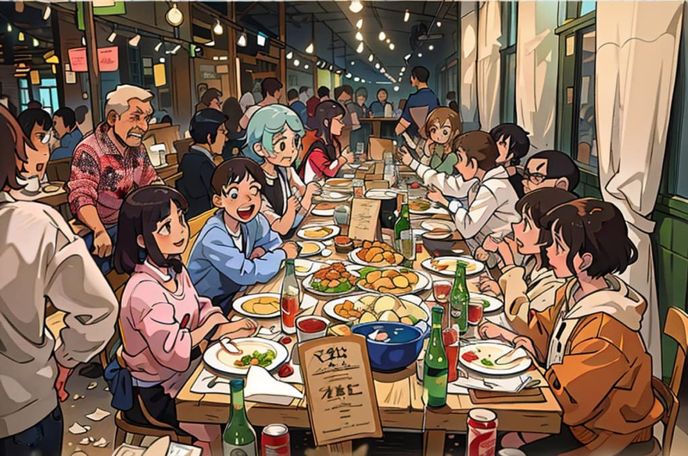

2023 · venture · note
CIMB Bank picks Baan Ar-Jor to host its executive reception

Original text in Thai
ขอบคุณทีมงานธนาคาร CIMB ที่ไว้วางใจเลือก #บ้านอาจ้อ เป็นสถานที่จัดงานเลี้ยงต้อนรับคณะผู้บริหารระดับสูง และทีมงานกว่า 50 ชีวิต จากหลากหลายประเทศนะครับ ❤️
เดือนกันยายน หรือภาษาบ้านเราจะเรียกเดือนนี้ว่าเดือน 10 โดยสถิติแล้ว จะเป็นเดือนที่ค้าขายได้ไม่คล่องตัว หรือขายได้น้อยที่สุดเมื่อเทียบกับยอดขายทั้งปี ที่บ้านอาจ้อเองพอเริ่มเข้าเดือนนี้ ลูกค้าก็เงียบลงน่าใจหายเช่นกัน 😵
แต่ต้องขอบคุณความตั้งใจของน้องๆ บ้านอาจ้อเอง ที่ดูแลลูกค้าทุกโต๊ะอย่างดีที่สุด และโชคดีที่หนึ่งในลูกค้าที่มาทานข้าวนั้นคือคนที่ตัดสินใจเลือกสถานที่จัดงานเลี้ยงต้อนรับที่สำคัญงานนี้ และงานนี้ก็เป็น 1 วันที่ให้ทั้งกำลังใจกับทีมงาน และทำให้บ้านอาจ้อสนุกครึกครื้นในช่วงเดือน 10 นี้ด้วย 🥰
เป็นกำลังใจให้ตัวเอง ทีมงาน และเพื่อนๆทุกคนที่ทำกิจการค้าขาย ผ่านพ้นเดือนนี้ไปให้ได้นะครับ 😇❤️
ปล ขอบคุณอนิเมะทำให้ทุกอย่างดู soft ลง 😊
#tohdeang 🔴
#บ้านอาจ้อ 💕